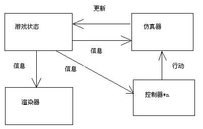
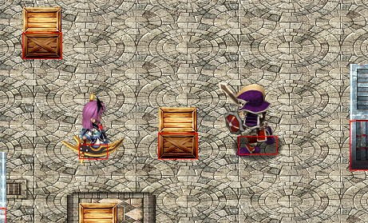
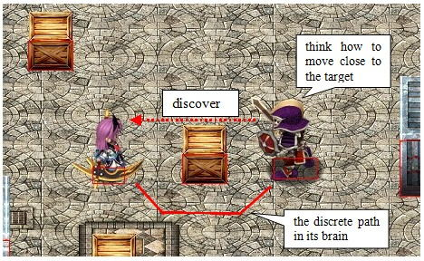
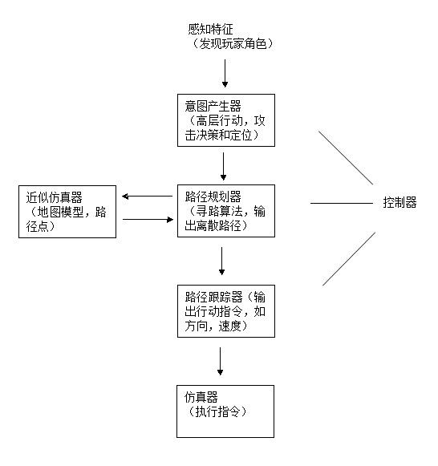
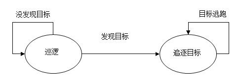
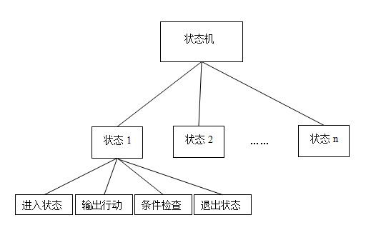
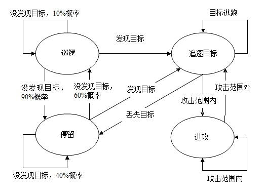

在开始讲游戏部分之前，我们先从一些概念性和科普性的东西聊起。游戏人工智能（Game AI）的许多学术理论和工程方法来源于人工智能（Artificial Intelligence）领域的研究成果。而人工智能的定义，我们一般从两个方面去考虑：
（1）像人一样地思考
人类大脑不能做大量的统计运算，但会利用自然规律和联系，通过简单而快速的启发性（heuristics）方法做决策判断。然而，人类由于情绪和理智不健全等因素，会做出大量“不理性”的判断。“不理性”也可以理解为“不完美”，例如你知道象棋的所有规则，但并不代表能击败电脑对手。这里会涉及到神经科学（Neurosciences）和心理学（Psychology）范畴的理论。
（2）完全理性地思考
机器没有智能，但拥有巨大的运算能力，能利用基于统计学和概率的数学方法，处理不确定性问题。这也是机器学习（Machine Learning）方向所研究和使用的方法。近几十年来，人工智能领域能够取得一些突破性的发展，也得益于机器学习方面的研究，并且它的有效性，已经让其成为这个领域的重要发展趋势。人工智能的领域经典——《Artificial Intelligence: A Modern Approach》，副标题的“modern”所指的，就在于此。
受益于学术界的蓬勃发展和商业上（或国家政府）的驱动，人工智能的相关技术已经有很多应用到生产环境。比如说自主规划和调度（NASA用于控制航天器的智能体）、自然语言处理（机器翻译、语音识别）、医学诊断、自主控制（无人驾驶）、机器人技术，等等。所以，一个很自然的想法，就是把现实世界里的人工智能，应用到游戏世界当中去。从商业的角度看，人工智能并非游戏开发的重点。受市场驱动而发展的技术一般集中在计算机图形学（三维技术、纹理映射、场景渲染），服务器性能开发和分布式技术（网络游戏）。所以一般很少见到哪个游戏产品标榜其拥有强大的游戏AI技术，并以其作为第一卖点（无论传统的单机游戏还是新兴的网络游戏）。但是，编写AI程序，赋予游戏角色智能，依然是一件有趣的事情。
一般来说，在一个名词前面再加上一个定语，和原来相比它就没有那么通用。游戏人工智能，相比人工智能，也是一样道理。游戏人工智能里面用到的模型和算法，通常只要让角色的行为，在特定的游戏场合里表现合理，就足够了。例如怪物看到你，会过来攻击你，这是合理的；但是如果它走过来的过程中，被卡在某些障碍物上，不会绕过去，就显得不合理了。这里的合理是指行为与目的相吻合，而与目的本身的合理性无关。有别于理性的智能程序，游戏AI不需要，甚至不倾向于做到十全十美。因为游戏的本质是愉悦玩家，电脑角色“适当地”犯错，有时会为玩家带来快乐和成就感。试想一个不可战胜的电脑角色，它给玩家带来的挫败感，将会是毁灭性的（游戏太难玩了，不玩）。当然，这样的结论在航天和医疗诊断上的应用就截然不同了，它们显然不允许哪怕是一丝一毫的判断不准确。
谈及游戏AI，我们一般需要对游戏系统结构有个大概的了解，这是一幅典型的、简单的模块示意图：

我们的游戏角色一般分两种：玩家角色和非玩家角色（NPC，Non-Player Character）。以这幅图来说，它们最大区别在于控制器这块。玩家角色由人控制，通过游戏画面（和声音）获取游戏状态信息，经过自己大脑的判断，转化成操作，通过输入设备，如键盘、鼠标、游戏摇杆（Joystick），变成所需要的行动命令。非玩家角色的控制器就是我们所说的AI程序，一般通过直接从内存读取的方式获得游戏状态，经过程序的“思考”，再转化成实际行动。
玩家角色和非玩家角色并不总是分开的，有的游戏允许这两种状态在不同时候进行切换。比如说魔兽争霸3，当玩家通过键盘鼠标输入时，这时是玩家角色；当玩家没进行任何控制时，游戏角色会自动攻击离它最近的敌方单位，这时便是非玩家角色。又比如天下3，我们可以通过鼠标键盘控制角色的走动，也可以利用“自动寻路”，前往目的地，这实际上就是两个控制器之间的切换。
我们开始以一个真实的例子，解释AI程序是通过怎么样的一个方式，操纵我们的NPC。这是我游戏里面的一个截图：

图中的紫色头发萝莉（玲，Renne）是我们的玩家角色，而持刀盾的骷髅战士则是非玩家角色（NPC）。我们NPC的AI，有3个最重要的构件：感知、决策、行动。这3部分可以生动地比喻成“眼睛”、“大脑”、“手脚”（这里的感知主要指“视觉”，当然可以增加“听觉”和“触觉”，甚至“直觉”）。跟人类的构成类似，越精细的器官，构造越复杂。类比到程序，道理也是相同的。感知和决策的实现，要比行动复杂得多。不过，我们还是想试图模拟怪物的这样一个思考和行动过程：它通过“眼睛”看到我们的玩家角色，然后经过“大脑”的思考，决定它的“手脚”要做什么行动。

现在，它正发现玩家角色处于它的视野范围。“发现”是NPC的视觉感知特征（perception），它通过某种视野检测算法来实现。这个感知特征通过游戏状态的形式，传给NPC的控制器（由于其复杂性，通常被实现为分层结构）。控制器接收到这个信息后，首先交给意图产生器进行运算，判断是否追击玩家角色，确定目标的位置。接下来（假设决定攻击），将目标定位结果传给下一级的路径规划器，它利用近似仿真器产生能到达目的地的离散路径。最后，路径跟踪器根据得到的离散路径，在游戏每帧的播放中，把游戏行动（如方向、行动）传送给仿真器，执行相应的行动。所以，控制器可以看成从感知特征到仿真器的函数。我们用一个流程图简单把它们组织起来：

接下来，我们需要对上述的AI行为进行建模，以便更简单地实现。目前业界用得比较多的AI模型有：1）决策树，Decision Tree；2）有限状态机，Finite-State Machine，我们简称状态机；3）层次化有限状态机，hierarchical finite-state machine，可以看成状态机的状态又是一个状态机，这样的一种嵌套结构；4）行为树，Behavior Tree。从理论上来说，这几种AI模型的性能没有什么本质区别，但从工程上来说，各种模型在不同的条件下会比别的更容易实现和维护。例如在怪物状态比较多的时候，行为树，或者层次化状态机，比单纯的状态机要优越，因为后者最多需要面对n*n（n为状态数）的跳转；而如果状态较少，普通的状态机则是最简单的。由于我没有把所有这些技术都用过一遍，所以不便做更多的描述和比较，有兴趣的同学可以通过wiki继续了解。这里只讲讲我比较熟悉的，并且用在我游戏里面的模型，状态机。
状态机在计算机科学里，可以说是一种非常有用的技术。我们的编译原理，自然语言处理（特别地，语音识别解码），背后都可以看到状态机的应用。而在游戏开发领域，状态机则是应用于游戏AI中最为流行，文献最多的一种技术。网易新出的一款大型MMO《龙剑》，它所使用的AI模型也是状态机。
回到我的游戏，我们先用状态机的形式，把上面提到的怪物AI场景给描述出来。

为简单起见，我们暂时先设定两个状态，更完整的状态机会在下面补充。图中的圆圈是怪物的状态，也看成是怪物的信念（belief），它是一种高层决策，而不是具体行动。箭头表示状态之间的转移，在其上的文字表示转移的条件。理论上，状态机的实现有多种形式，一个大循环里，对游戏信息进行判断处理是一种。但这里更好的实现，是将单一状态做成一个类，状态机做成这些状态的对象容器。这样我们就可以隔离不同状态之间的复杂逻辑，专注于实现当前状态，并且通过对状态添加一些方法，实现对各种不同状态的调度。它们之间的拓扑结构如下图：

我们首先需要有一个状态基类，包含4个最基本要素：进入状态，输出行动，条件检查，退出状态。这4个要素实现成（纯）虚函数的形式，让继承的子类（具体状态）实现它们自己的逻辑。
然后，需要实现状态机类。它要做的事情有3件：1）维护一个所有状态的容器；2）实现状态的转移（或维持当前状态）；3）在每个游戏循环，调用当前状态对象的相应方法，输出行动指令。
下面，以“追逐目标”这个状态，讲讲怎么实现状态类的4个基本函数的。
进入状态：这个阶段也叫状态的初始阶段。由于我们要实施对目标的追逐，所以我们必须要计算一条走向目标的路径，最好是最短路径，而且效率足够高。所以这里做的事情是：1）获得目标当前坐标；2）把坐标交给寻路算法（这里用的是A*算法），计算得到离散路径。这里可以做一些额外的路径优化（pathsmoothing），如果有需要的话。
输出行动：根据寻路算法计算得到的路径，在游戏的每一帧的播放中，调整怪物的朝向，并将底层行动指令——“走”，传给怪物的仿真器执行。这个过程称为行走操控（steering），如果我们把寻路算法比作汽车的GSP导航系统，那么行走操控则相当于汽车的方向盘。
条件检查：检查是否达到转换状态的条件（包括转向同一状态）。在怪物走向目标的过程中，目标可能产生各种行动，最典型的就是逃走。因此，我们需要根据目标离开原来路径终点的距离，调整路径（或者重新寻路），这是转向同一状态的情况。另外，目标还有可能逃离怪物的追逐范围，这时怪物丢失了目标，转入另外一种状态——“停留”。还有一种情况，怪物追逐到目标身边，使得目标进入怪物的攻击范围，这时怪物转入“进攻”状态。
退出状态：做一些收尾工作，清空目标坐标。
其它具体的状态类，要做的事情很明确，也是根据自己的逻辑，填写这四个函数。好了，这个时候，我们扩展一下整个怪物的状态转换图，获得一个相对完整的AI状态机：

看上去，这已经是一只比较有趣的怪物了，总共有4个状态：巡逻，停留，追逐目标和进攻。注意我在巡逻和停留的转化条件中，增加了概率。这是因为，目前来说，它们的跳转条件相同。而我想让怪物走走停停，来回行动，徘徊侦查，看上去像人在思考，这样实现的效果就比较逼真了。
还需要注意的是，有的状态之间的转换，是不需要“频繁”进行的。比如“巡逻”和“停留”，“巡逻”可以持续1-2秒，再考虑转换到“停留”，反之亦然。有的状态，是要“持续进行”一段时间的。比如“进攻”，当怪物调整好朝向，开始挥动武器时，要等相应的攻击动画播放完，才检查状态转移，不然效果会很奇怪。
当然，我们其实还需要加上一些状态，让怪物的AI系统更加完备。例如，怪物在与玩家激战的过程中，会不断掉血，当它觉得打不赢玩家，可能会选择“逃跑”；有的会继续奋战，直到“死亡”。这些都是需要完善的状态。有了状态机这样一个有用的工具，我们能够更加容易和方便地添加更多的状态，前提是需要相应的动画支持（AI是个内在过程，需要外在的动画进行展现）。
可以说，状态机的实现是算法与工程的暴力结合。每个状态里，编写针对不同逻辑的计算过程（如怪物寻路），使得程序产生合理输出，并且运算过程足够高效，这是算法；将一个复杂问题分解为一个个简单、独立，能够较为容易解决的模块（状态类），再将这些模块一个个重新有机地组合起来（状态机类），来为最顶层的复杂问题提供答案，这是工程。
现在，我的开发就进行到这里，虽然游戏世界非常简陋，但一个基本的战斗demo已经出来。未来的目标是继续开发完善，做成一个，能够让业余游戏开发爱好者参考学习的教学项目。
我们说，游戏人工智能虽然是个很具吸引力的题目，但就目前来说，NPC的绝大部分智能，都是人赋予（或者模拟出来）的智能。它现在有多聪明，以后就有多聪明，不会变得更聪明，当然也不会变蠢。我们会思考一个问题，NPC能不能具有学习的能力？现在游戏中的NPC，不少具有“仿真学习”的能力，例如NPC询问玩家的名字，以便下次的对话中，能直接呼喊。我们认为，这仍然属于“模拟智能”，NPC只是看起来好像“学”到了玩家的名字。真正意义上的机器学习，目前在游戏开发中的应用是少之又少。但我们仍然有理由相信，随着这个方向的不断深入研究，它将会推动游戏人工智能在游戏行业的发展，让游戏中的NPC具有更加复杂和有趣的行为（例如和玩家自然对话）。
不过还是那句话，游戏的最终目的，是愉悦玩家，而不是战胜玩家。我们大部分人都无法成为象棋大师，所以开发一个能击败象棋世界冠军的NPC，是不会有多大的现实意义的，尽管这可能具有一定学术意义。游戏最大的价值在于娱乐，无论我们想用什么牛逼的技术，来让游戏变得更“丰富”，让我们的AI变得更“真实”，都不能脱离这个最本质的思路。
游戏AI状态机就到这里，我们下次再见。